Fiber reinforced concrete
Fiber reinforced concrete (FRC) is concrete with short steel or polymer fibers added during mixing. The fibers bridge the cracks that form under load, so the cracked concrete keeps carrying tension. The group tests the material in beams, round panels and full-scale members, back-calculates its tension response from those tests, and develops the procedures used to design with it.
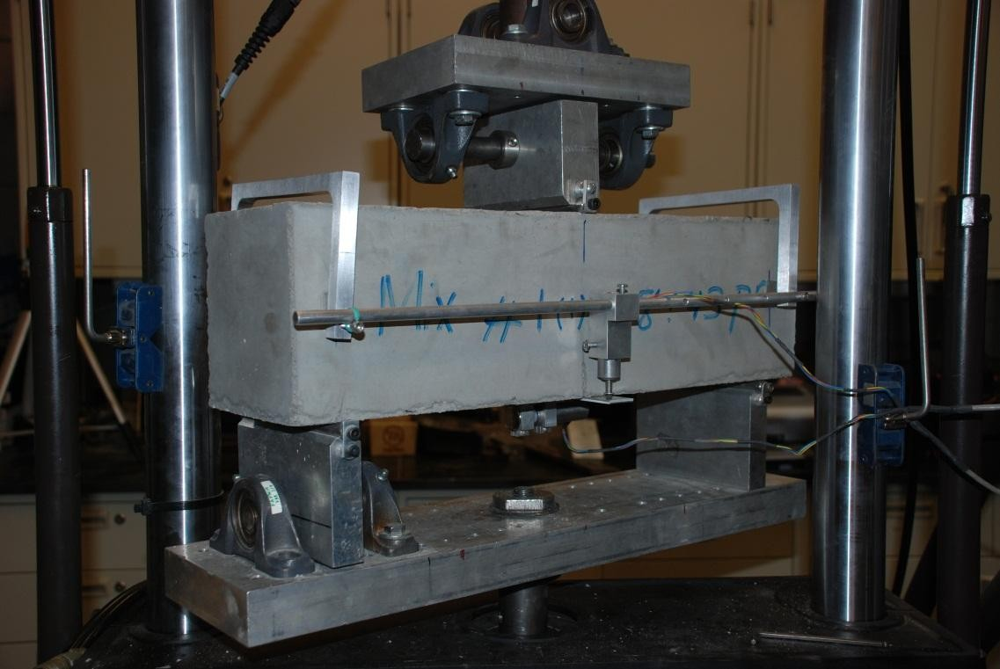
Fibers in cracked concrete
Fiber-reinforced concrete (FRC) is extensively used as primary or secondary reinforcement in infrastructure projects. Fibers have several advantages in comparison to traditional reinforcement, which include increased ductility and durability while reducing the construction time and labor costs. FRC also improves the post-cracking behavior considerably, and increases energy absorption, defined as toughness, several fold.
The fibers are introduced during the concrete mixing process, so they are dispersed through the whole member. When the concrete around them, called the matrix, cracks, the fibers that cross the crack bridge it and continue to transfer load. The stress they carry is the residual tensile strength, which represents the load carrying capacity due to fiber reinforcing mechanisms beyond the first crack strength. The residual strength is a function of the number and random orientation of fibers crossing the cracked section.

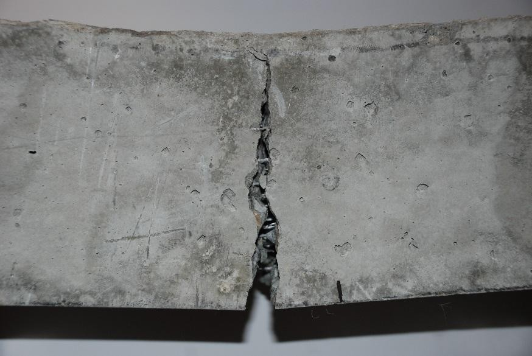
Fiber types
Steel fibers and polymer fibers such as polypropylene are both used, and the type and volume fraction of fibers affect the level of energy absorption. The full-scale track slab tests for the Phoenix light rail compared a twisted steel fiber 2.5 cm long at 15 kg/m3 (0.2% by volume) with a hooked steel fiber 6 cm long at 39 kg/m3 (0.5%). Recent studies highlight the promising performance of polymeric fibers in full-scale tests, approaching those of steel fibers.

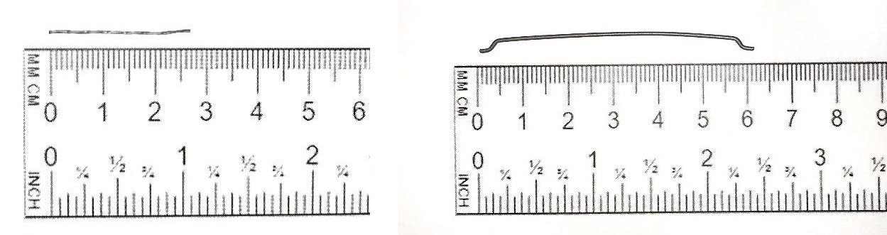
Flexural beam tests
To assess post-cracking residual tensile strength, flexural tests on prismatic specimens such as EN 14651, ASTM C1609, and JCI-SF4 are used. ACI 544.4R recommends conducting the ASTM C1609 beam test on a closed-loop system, in which the machine is controlled by a deformation measured on the specimen. In the three-point bending tests run by the group on notched beams, that deformation was the crack mouth opening displacement (CMOD), which was increased at 0.12 mm/min.
Critical parameters such as crack length and width in the localization zone, where the deformation concentrates at one crack, can be measured using the Digital Image Correlation (DIC) technique. It gives the strain over the face of the beam from a sequence of photographs. In an unnotched beam the strain field shows cracks starting at more than one section before one of them opens. A notch fixes a single crack at midspan and reduces the first peak and the variability in the test data. The scatter in the results of beam specimens is attributed to the properties of the matrix, bond interface, fiber length, orientation, and distribution throughout the concrete.

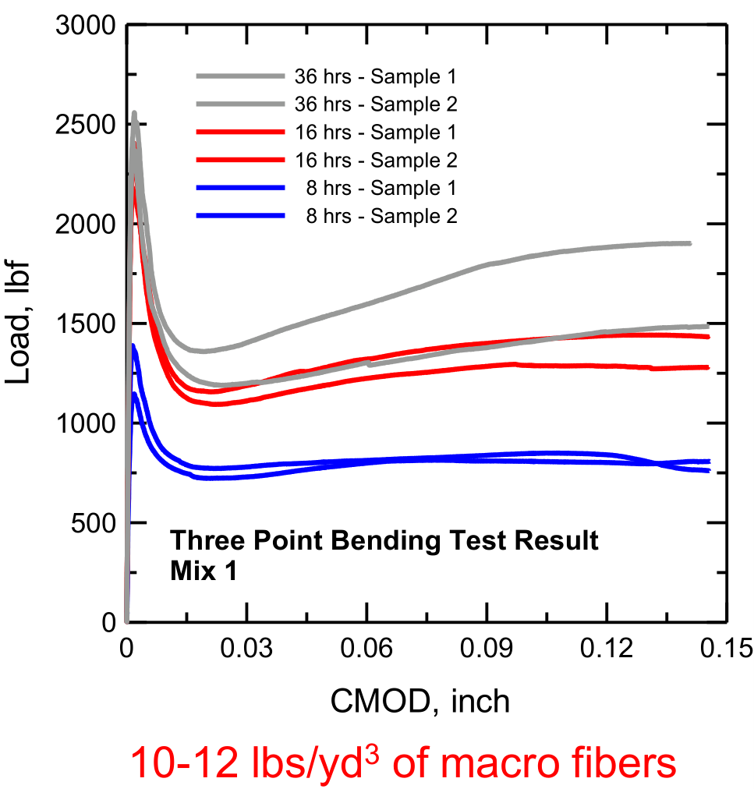

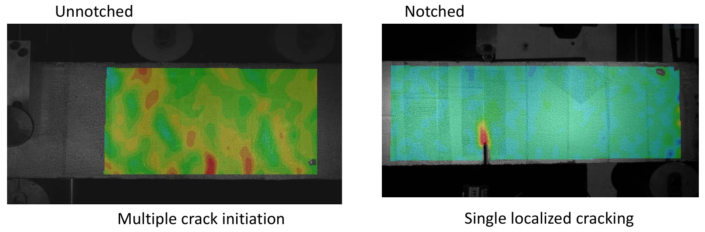

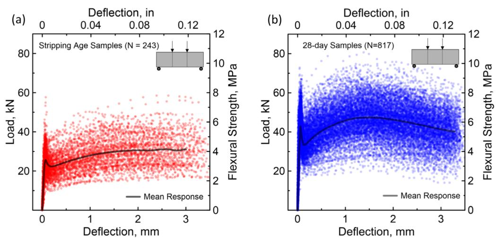
Round panel tests
In the ASTM C1550 test a round panel rests on three supports and is loaded at its center. The group used it with notched beams to evaluate fiber reinforced shotcrete, a concrete that is sprayed in place, for the initial support of a 2000 m deep shaft at Resolution Mine, Arizona.
Round panels 1500 mm in span and 150 mm thick on a continuous support were tested with 80 and 100 kg/m3 of steel fibers. The material properties back-calculated from the 100 kg/m3 panels were used in a finite element simulation of a full-scale elevated slab, which predicted a load capacity 15.5% higher than the test result.

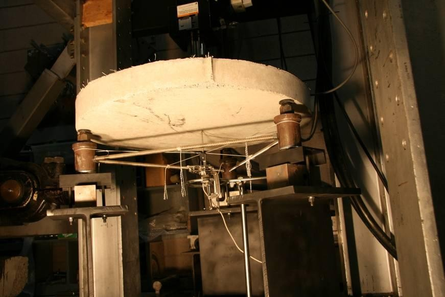
Design values from test results
The structural design of FRC sections is based on post-cracking residual strength provided by randomly oriented fibers inside the cementitious matrix. A bending test records load and deflection and not the tensile stress in the material, so the tension response is back-calculated. A stress-strain model with a few parameters is assumed, the load-deflection curve it predicts is obtained from closed-form moment-curvature solutions, and the parameters are adjusted until the prediction fits the experiment.
The stress obtained this way is lower than an elastic calculation gives, because the cracked zone carries a low and nearly constant stress where the elastic formula assumes a linear distribution. In a comparison by the group, a calculation that treats the cracked beam as linear elastic overestimated the residual tensile strength by 2.2 times. The procedure is described in ACI 544.8R, and the parameters are then used in design under ACI 544.4R.

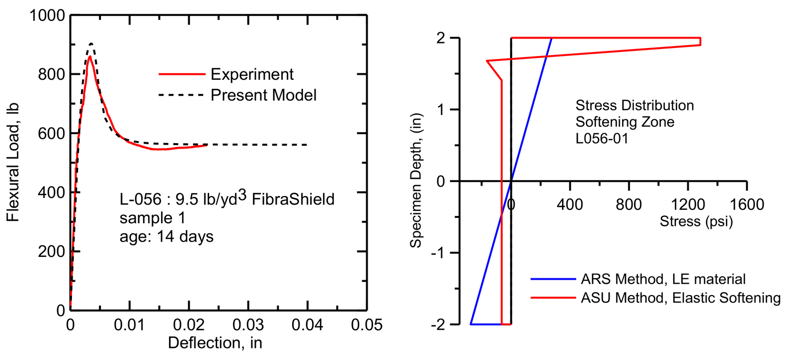
Shrinkage cracking
Concrete shrinks as it loses water, and it cracks when the shrinkage is restrained. The group measured the effect of fibers with a ring test, in which concrete is cast around a steel ring and the strain in the steel is recorded as the concrete dries. The ring without fibers lost its strain at once when the concrete cracked, while the rings with alkali-resistant glass fibers cracked later and released the strain gradually. After 14 days the average crack width was 1.15 mm in the control samples and 0.341 mm with fibers.

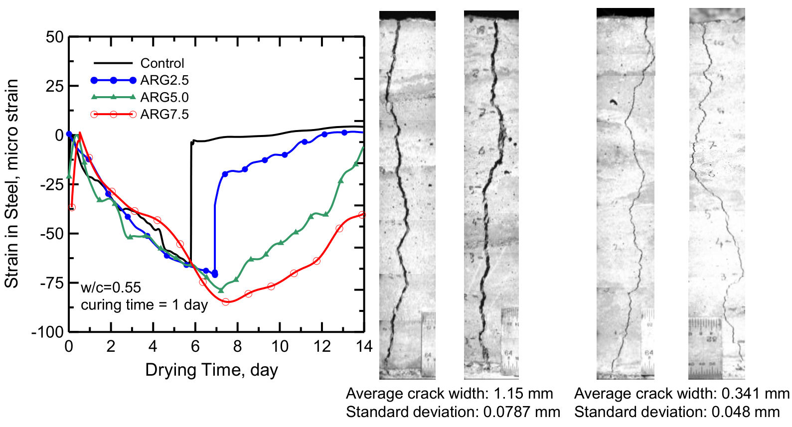
Applications
There are numerous advantages of using a fiber reinforced concrete system in applications such as elevated slabs, industrial floors, and structural thin sections. The key advantage is in the time reduction of the installation as the double layers of traditional rebars and stirrups can result in several weeks of construction time. For Salt River Project the group developed FRC specifications for cast-in-place, precast and shotcrete work, which covers canal linings and precast panels for water tanks.
On the Valley Metro light rail extension in Phoenix, steel fiber reinforced concrete replaced the two reinforcing bar mats of the track slab, and the slab thickness was reduced from 14.5 to 12 inches. Full-size mock-ups were tested under increasing load and under 2 million cycles of fatigue load. Fibers are also combined with reinforcing bars in hybrid reinforced concrete and used in precast tunnel lining segments, which have their own pages.

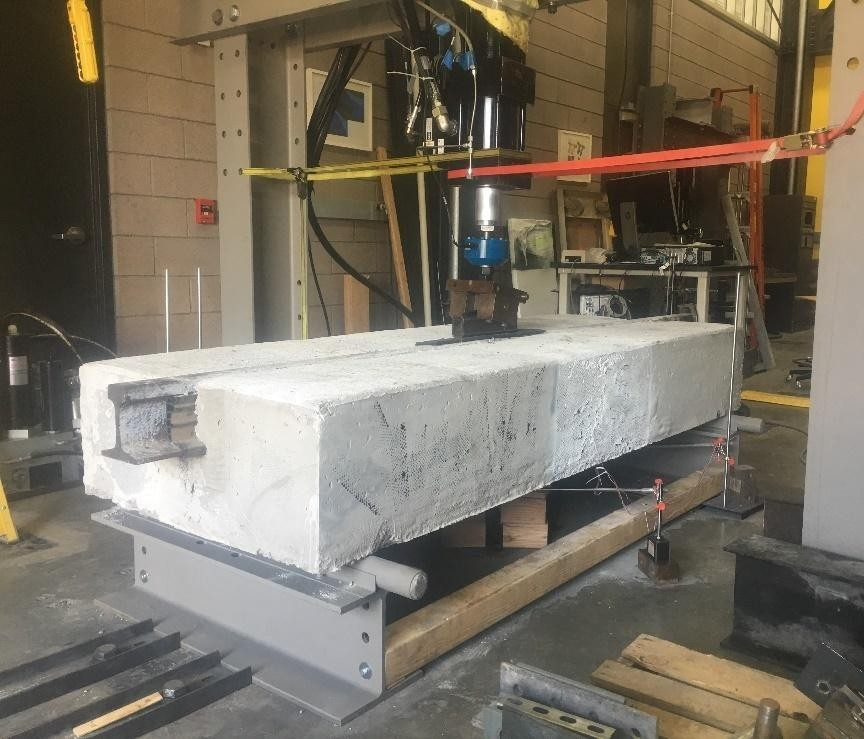

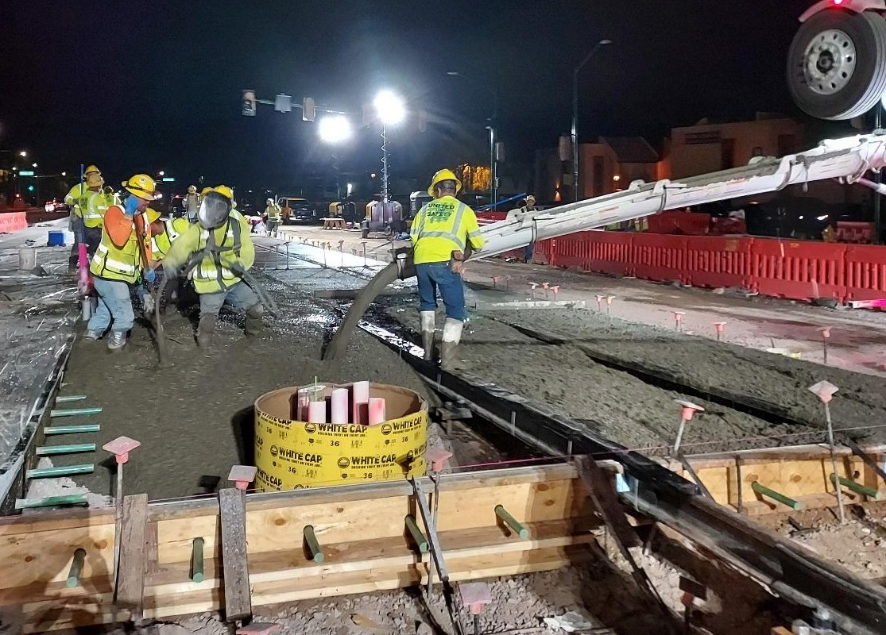
Papers
All publicationsClosed-form solutions for flexural response of fiber-reinforced concrete beams
Journal of Engineering Mechanics, ASCE, 133 (8), 933-941
@article{soranakom2007closed,
author = {Soranakom, Chote and Mobasher, Barzin},
title = {Closed-form solutions for flexural response of fiber-reinforced concrete beams},
journal = {Journal of Engineering Mechanics},
volume = {133},
number = {8},
pages = {933--941},
year = {2007},
doi = {10.1061/(ASCE)0733-9399(2007)133:8(933)}
}
Correlation of tensile and flexural responses of strain softening and strain hardening cement composites
Cement and Concrete Composites, 30 (6), 465-477
Backcalculation of residual tensile strength of regular and high performance fiber reinforced concrete from flexural tests
Construction and Building Materials, 70, 243-253
Comparative evaluation of early age toughness parameters in fiber reinforced concrete
Materials and Structures, 47, 853-872
Sequential Cracking and Their Openings in Steel-Fiber-Reinforced Joint-Free Concrete Slabs
Journal of Materials in Civil Engineering, 28
Analytical procedures for design of strain softening and hardening cement composites
International Journal of Advances in Engineering Sciences and Applied Mathematics
Closed-form solutions for flexural fatigue mechanical degradation of steel fiber reinforced concrete beams
Construction and Building Materials, 409, 134200
Mechanical response of precast tunnel segments with steel and synthetic macro-fibers
Cement and Concrete Composites, 144, 105303
Back-calculation of mechanical properties of fiber-reinforced concrete in tunnel lining segments
Structural Concrete, 26 (5), 6019-6040
Test footage
All videosFibers bridging a crack in tension
Close-up of a dogbone tension coupon, where fibers bridge the opening crack and distribute the damage.
Multiple cracking in four-point bending
The strain field resolves a series of parallel cracks across the constant-moment region as the load-deflection curve climbs.
Drop-weight impact on a fiber reinforced beam
High-speed camera footage of crack nucleation in a fiber reinforced concrete beam under impact.
Rail track slab in the test frame
A full-scale slab section with an embedded steel rail, loaded in the fatigue frame.
Presentations
- Notched vs. Unnotched Methods of Testing Fiber-Reinforced Concrete (FRC) in Flexure PDF
- Fiber Reinforced Shotcrete and Earth Retaining Structures for Rockfall Protection PDF
- Design Procedures for Fiber Reinforced Concrete Applications in New and Repair of Hydraulic Structures PDF
- Large Scale Testing and Analytical Modeling of FRC and UHPC PDF
- Toughening mechanisms in cement composites PDF